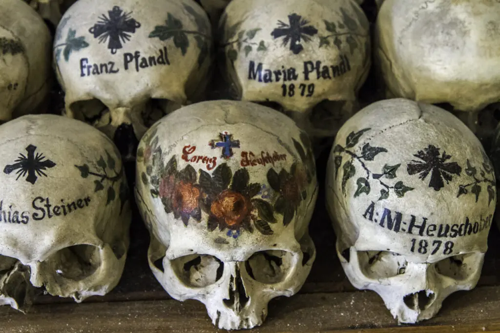

სამოთხის ნაწილი დედამიწაზე
ეს არის სოფელი ავსტრიაში, ჰალშტატერის ტბის სიახლოვეს. ჰალშტატი ისტორიულად ცნობილია მარილის წარმოებით, რომელსაც ადგილობრივი საბადოებიდან მოიპოვებენ. წარმოადგენს ევროპის უძველეს მარილის მაღაროს, სადაც უკვე სამი ათასი წელია ეს პროცესი მიმდინარეობს. მისი მონახულება შესაძლებელი იყო მხოლოდ ნავით ან მთის ბილიკით.
დღესდღეობით კი ეს პოპულარული ტურისტული ადგილი და იუნესკოს მსოფლიო მემკვიდრეობის ძეგლია. აქ შეგიძლია მოინახულო ერთ-ერთი ყველაზე დიდი მოხატული თავის ქალების კოლექციაა ევროპაში.
| ღირსშესანიშნაობები |
|---|
| მარილის მაღარო (The Salzwelten) |
| მთავარი მოედანი (Marktplatz) |
| მსოფლიო მემკვიდრეობის მუზეუმი |
| წმ. მიქაელის სამლოცველო |
| ჰალშტატის ევანგელური ეკლესია |
| თავის ქალების აკლდამა |
| რა დავაგემოვნოთ |
|---|
| ფენოვანი ცომის ხვეულები (Schaumrolle) |
| ვაშლის შტრუდელი |
| ავსტრიული შნიცელი |